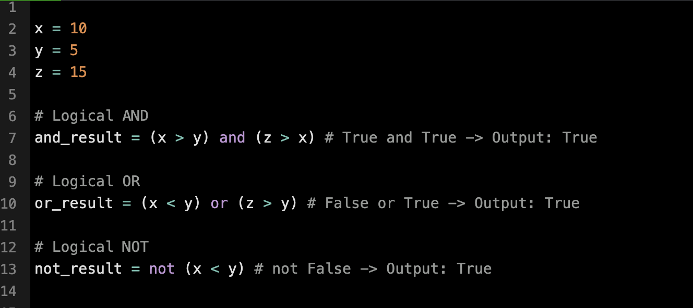
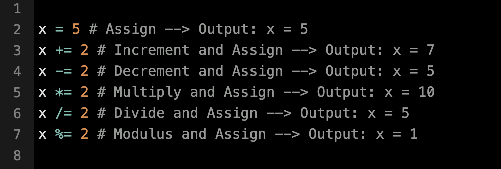
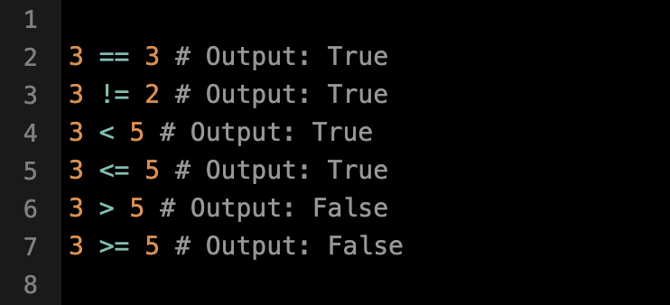

Logical Operators
Python provides the following logical operators:
- and returns True only if both conditions are True.
- or returns True if at least one of the conditions is True.
- not returns True when the given condition is False.
The example below illustrates how logical operators work in Python:

Assignment Operators
Python provides the following assignment operators:
- = assigns the value on the right to the variable on the left.
- += increases a variable's value by a specified amount and reassigns it.
- -= decreases a variable's value by a specified amount and reassigns it.
- *= multiplies a variable's value by a specified amount and reassigns it.
- /= divides a variable's value by a specified amount and reassigns it.
- %= calculates the remainder when dividing a variable's value by a specified number and reassigns it.
The following example demonstrates how assignment operators work in Python:

Comparison Operators
Python includes the following comparison operators:
- == (Equal): Returns True if both values are the same.
- != (Not Equal): Returns True if the values are different.
- < (Less Than): Returns True if the left value is smaller than the right value.
- <= (Less Than or Equal To): Returns True if the left value is smaller than or equal to the right value.
- > (Greater Than): Returns True if the left value is larger than the right value.
- >= (Greater Than or Equal To): Returns True if the left value is larger than or equal to the right value.
The following example demonstrates how to use comparison operators in Python:

Python Code Editor
Output: